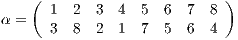
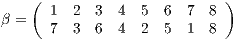
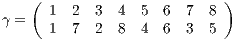
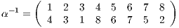
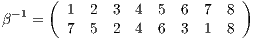
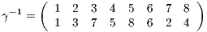
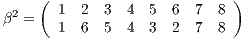
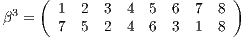

Calcolare le permutazioni di S8, periodo e segno,
inversa di una permutazione, Sottogruppo ciclico
dell permutazioni
baudo81[at]gmail.com
June 11, 2017
1 TESTO
Si considerino le seguenti permutazioni di S8:



- Calcolare il periodo ed il segno delle tre permutazioni.
- Calcolare l’inversa di ciascuna permutazione.
- Determinare esplicitamente gli elementi del sottogruppo ciclico generato
da β.
2 TEORIA
3 SOLUZIONE
- α = (13284)(576), β = (17)(2365), γ = (273)(485) Siccome il segno di un
prodotto di cicli è il prodotto dei segni e siccome il segno di un ciclo di
lunghezza s è (−1)s−1, abbiamo che il segno di α, β e γ è sempre 1.
-



- Siccome il periodo di β è 4 abbiamo che il sottogruppo generato da β
conterra id, β, β2, β3 e si avrà


.